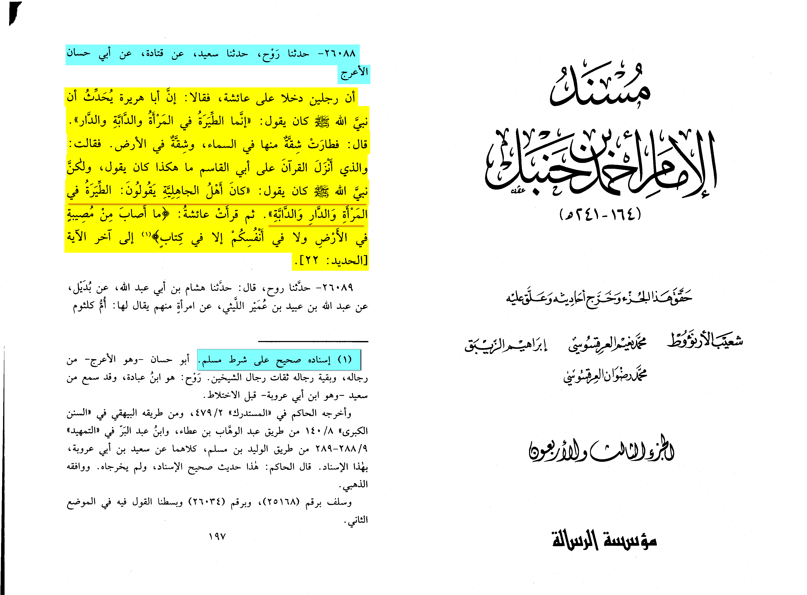

Wa alaikum salam wa rahmatullahi wa barakatuh,
Thank you for your question. Variations of this narration appear in almost all the major compilations of hadith.
Due to reading a translation that may not convey the nuance of the meaning, the casual reader may be led to
think that this hadith affirms the existence of bad luck, or that women are bad luck.
Neither of these assumptions are true, nor are they intended by the hadith. Belief in superstition is completely
forbidden in Islam, and women are the noble partners of men in worshiping Allah Most High, not a bad omen.
If we translate the hadith while considering its linguistic implications, corroborating versions and context,
it would then approximately read that the Prophet Muhammad [Allah’s peace and blessings be upon him] said:
“If there was [such thing as] bad omens in anything, they would have been in houses, spouses and horses.”
[al-Bukhari, al-Sahih and Muslim, al-Sahih]
Thus, the hadith negates the existence of bad luck or bad omens, and points out three major things in life
(where you live, who you marry and your means of transport) which people, after suffering a bad experience with
any one of them, often inadvertently fall into superstitious beliefs about.
An example is if there is a house in which every previous owner suddenly died upon moving in, and the new owner
just discovered after having moved in. If their faith is not strong, this could prove to be a great source of
anxiety for them, despite the fact that they are Muslim who know that everything is in Allah Most High’s control and that superstition is false.
This hadith then becomes the basis of a merciful dispensation. For those whose fear can actually affect their faith
and cause hardship, they can separate from the cause of their anxiety in order to relieve themselves and protect
their beliefs from doubts, and they would not be blamed for having acted on the basis of superstition if they did so.
Superstition and Fortune-Telling Are Impermissible in Islam
Firstly, it is important to note that fortune-telling and superstitious omens are completely forbidden (haram)to
engage in or believe in in Islam. This is because Allah Ta’ala is in complete control of all things, yet in superstition,
the benefit or harm in a matter is consigned to other than Allah, such as a spirit, or a force that one begins to believe in, fear and “consult”.
It was the practice of the pre-Islamic Arabs to believe in superstitions and consult the flight pattern of birds
(augury) as an attempt to check for a good or bad omen. Islam negated this belief and practice, as this and other hadith show.
The hadith is simply saying that while bad omens are not true, houses, spouses [not “women” as is mistranslated]
and riding mounts [read: one’s means of transport] are the things of this world that people most often attach bad omens to.
Another reading of the hadith could mean that while omens are not true, if they had been true, it would have been
in these three things. Only a small minority of scholars, namely Imam Malik, held that these three areas were
actually exceptions to be susceptible to bad omens.
The majority of scholars disagreed, concurring on the falsehood of all bad omens, citing another version of this
hadeeth mentioned in al-Bukhari’s Sahih which begins by clearly negating augury and belief in any force independent
of Allah before mentioning the same text as above. [al-Kandehlawi, Awjaz al-Masalik]
Why Houses, Spouses and Horses?
The hadith mentions three things: houses, spouses and horses. They are most often the objects of a person’s
superstitious anxiety or pessimism because they are so pervasive in one’s life, and problems can often
occur in them. Once a problem occurs in them, someone whose faith is not strong might start getting whisperings in
their heart and doubts that it is a sign of bad luck. Scholars also interpret the word “bad omen” here to mean “inauspicious”,
or non-conducive to blessings and happiness.
On this meaning, the scholars give the example that a bad omen in a house could be: having bad neighbors,
or the house being dark and cramped for space, or be so far from the masjid that one cannot hear the adhan.
In a horse, an example of inauspiciousness could be that it gets tired easily and is unreliable, or that it
has never been used for a noble purpose. In modern times, perhaps an analogy could be made to a car which repeatedly
breaks down and is associated with many problems.
In a spouse, it could be bad character, or secret flaws, or the tendency to be verbally abusive, or a worldy or
greedy outlook. [al-Tibi, Sharh Mishkaat]
Thus, for those in whom feelings of anxiety are becoming harmful to their faith and peace of mind, the scholars
say that it is better to move out of a “creepy” house, to respectfully divorce a troublesome spouse, and sell off a
problematic means of transport so that one can move on with their lives and their faith.
Does the Hadith Say that Women are Bad Luck?
The hadith does not mean that women, as a gender, are bad luck. Firstly, we have just explained how the hadith does
not affirm the existence of bad luck at all, rather it negates it. The translation can thus be misleading.
Secondly, the children of Adam and Eve (peace be upon them) are the ennobled and chosen creation of Allah Most High,
and Islam does not see an entire half of the human race as inauspicious, or less blessed, or more inclined to evil than
the other half, as perhaps some other religions traditionally have.
Thirdly, women are recounted as sources of blessings in many places. The Qur’an itself refutes the idea that the birth
of a girl is a bad omen [Quran 16:58]. In hadith literature, raising female children properly has been mentioned as being
a means of salvation from the hellfire, and a means to eternal closeness to the Messenger
(Allah’s peace and blessings be upon him) in Paradise.
As Imam Sakhawi said:
“And had there not been in [daughters] divine blessings, the pure lineage and prophetic progeny would not have
been carried forth through a woman [Fatima, may Allah be pleased with her].” [al-Sakhawi, Maqasid al-Hasana]
However, even the translation of “al-mar’a” into “women” is misleading. The hadith does not simply intend females
(al-nisaa). Rather, the word used is also used for “wife” in Arabic. This is further corroborated by the fact that
the many commentators of this famous hadith only mention qualities related to marriage in commenting on this term. “Wife”
was used because those being addressed were men.
However, we also see that the inauspicious qualities that could be found in a wife could equally be found in a man:
bad character, a worldly attitude or a history of bad marriages. As a hadith states, women are the “twin-halves of men”
[Abu Dawud, Sunan] and Ibn Hajr al-Asqalani comments that this shows that men and women are equal in rulings unless specified;
thus a translation that clarifies the purport would be “spouses”. [Ibn Hajr, Fath al-Bari]
Bad Omens Are Only Upon Those Who Believe In Them
Some scholars have opined that superstitious worries often bring about negative results, not because of bad luck, but because
it leads one to become paranoid and actually invite and provoke calamities due to that fear, like a “self-fulfilling prophecy”.
[Taqi Usmani, Takmila Fath al-Mulhim]
One version of this hadith adds:
“The bad omen is upon the one who practices the reading of bad omens.” [Ibn Hibban, al-Sahih]
As for the second part of the hadith in the question where the Prophet [Allah’s peace and blessings be upon him] advised the
family to move out of the house in which they suffered losses [“then leave it to its own vileness”], this was advised because
the family in it had suffered a loss and had already attached a pessimistic view to it. Hence, it was only their negativity
that made the house vile, so to relieve their worries despite believing in Allah Most High, it became permissible to move to
another dwelling. [al-Baji, al-Muntaqa]
This teaches us the harm of forgetting that Allah Most High is in total control of His creation, and highlights the importance
of relying on Him alone, and believing firmly that harm and benefit can come only from Him. And we ask Allah Most High for
His protection from calamities, and that He facilitate for us all paths to His pleasure.
The scholars differed concerning these ahaadeeth and how to reconcile them with the ahaadeeth that forbid tatayyur.
Some of them interpreted them as they appear to be, and said that this is an exception from the ruling on tatayyur, i.e.,
that tatayyur is forbidden unless a person has a house which he does not want to live in, or a wife whom he does not want to
keep company with, or a horse or servant, all of which he should get rid of by selling them, or by divorcing the wife.
Others said that a house may be regarded as a bad omen when it is too small, or there are bad neighbours who cause trouble;
a woman may be regarded as a bad omen when she does not produce children, or she has a sharp tongue, or she behaves
in a suspicious manner; a horse may be regarded as a bad omen when it is not used in jihad, or it was said, when it is
difficult to handle or it is too expensive; and a servant may be regarded as a bad omen when he has a bad attitude or is not trustworthy or reliable.
Sharh al-Nawawi ‘ala Muslim.
The correct view is that all types of belief in bad omens are condemned, and that no kinds of women, houses or animals can
cause harm or bring benefit except by Allaah’s leave. Allaah is the Creator of both good and evil. A person may be tested
with a wife who has a bad attitude, or a house in which there is a lot of problems, in which case it is prescribed for him
to rid himself of these things, fleeing from the decree of Allaah to the decree of Allaah, and so as to avoid falling
into pessimism and belief in bad omens which is forbidden.
Ibn al-Qayyim (may Allaah have mercy on him)
“Another group said: regarding these three as bad omens only affects those who believe in that. Whoever puts his trust
in Allaah and does not believe in omens and superstition, that does not affect him. They said: this is indicated by
the hadeeth of Anas, ‘A bad omen only affects the one who believes in it.’ If a person believes in bad omens,
Allaah may make that the cause of bad things happening to him, just as He may make trust in Him and making Him alone
the focus of one's fear and hope one of the main causes of warding off evil that people may superstitiously expect.
The reason for that is that tiyarah (superstitious belief in omens) implies shirk or associating others with Allaah,
fearing others besides Him and not putting one’s trust in Him. The superstitious person attracts evil to himself,
so the superstition affects him more, because he did not protect himself with belief in Allaah alone and trust in
Allaah. If a person fears something other than Allaah, it gains control over him and he is tormented by it; if he
loves something else as well as Allaah, he will be tormented by it; if he puts his hope in something alongside
Allaah he will be let down by it.
These matters are well known from real life and there is no need to provide further evidence. Everyone inevitably
feels superstitious but the strong believer wards off those superstitious feelings by putting his trust in Allaah.
Whoever puts his trust in Allaah, He will suffice him and he will have no need of anyone or anything else. Allaah says
(interpretation of the meaning):
“So when you want to recite the Qur’aan, seek refuge with Allaah from Shaytaan (Satan), the outcast (the cursed one).
Verily, he has no power over those who believe and put their trust only in their Lord (Allaah).
His power is only over those who obey and follow him (Satan), and those who join partners with Him (Allaah,
i.e. those who are Mushrikoon, i.e., polytheists)”
[al-Nahl 16:98]
https://m.youtube.com/watch?v=M3zKX6YQhQk
Abu Hassan al-A’raj reported: Two men entered the home of Aisha, may Allah be pleased with her,
and they said, “Abu Huraira narrates that the Prophet, peace and blessings be upon him, said:
Verily, omens are in women, animals, and houses.” Aisha became upset and she said, “By the one
who revealed the Quran to Abu al-Qasim, it is not like that. The Prophet was saying: The people of
ignorance used to say omens are in women, houses, and animals.” Then, she recited the verse,
“No affliction occurs in the earth or within yourselves except that it is written in a book.” (57:22)
Source: Musnad Aḥmad 26088
Grade: Sahih (authentic) according to Al-Arna’ut [Musnad Ahmed tahquiq al-arna’ut (43/197) footnote no.1]
